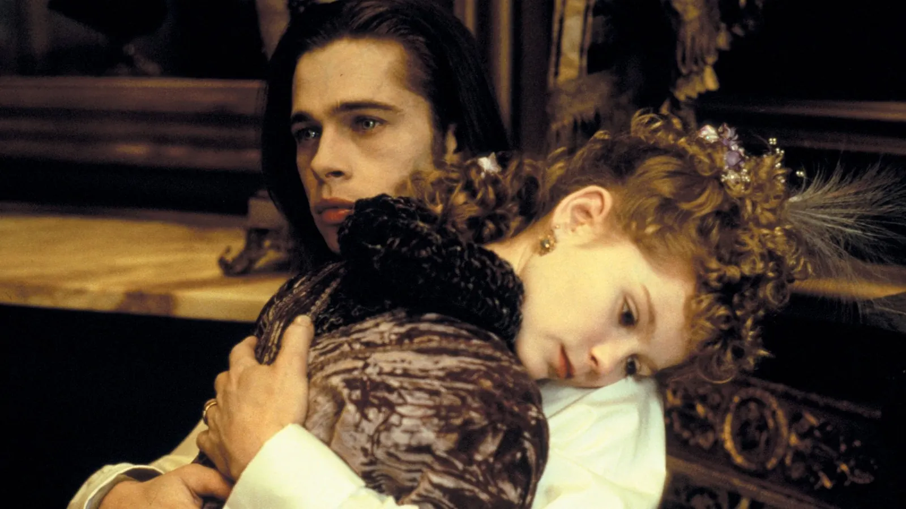

A frame from the film. That is all you get.
← Back to the archiveCase file / Interview with the Vampire
1994 film · directed by Neil Jordan
Does Brad Pitt die in Interview with the Vampire?
He plays Louis de Pointe du Lac.
Want to guess first?
Revealing shows only the answer. Everything else stays behind its own curtain.
No.
He is alive when the credits roll.
How it happens, in words. No pictures yet.
He's been undead since 1791 and still is.
Louis, turned by Lestat in 1791, is the immortal narrator telling his story to a journalist in 1990s San Francisco. He survives Lestat's attempted murders, the Théâtre des Vampires burning, and centuries of misery. The film ends with a revived Lestat attacking the interviewer in his car, but Louis himself is very much still around.
Technically 'dead' as a vampire, but the character never perishes. Claudia, not Louis, is destroyed by sunlight.
- Director
- Neil Jordan
- Runtime
- 123 min
Where to find the scene.
The scene
No clip on file yet. Search YouTube for the scene